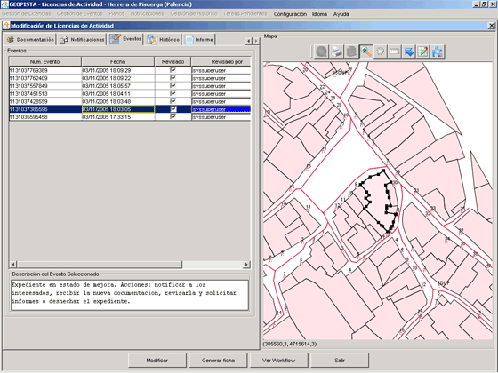
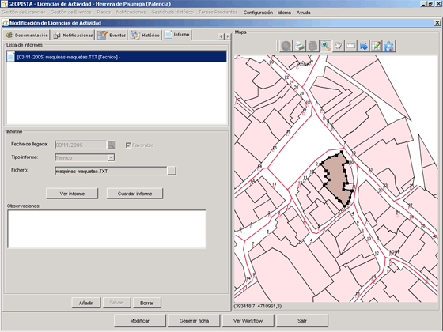

Con esta opción el usuario podrá modificar una Licencia de Actividad del sistema.
Una vez seleccionada la opción, la aplicación muestra el formulario de modificación.

Corresponde a los datos de Expediente.
Los campos marcados con * han de ser cumplimentados obligatoriamente, o de lo contrario no se podrá modificar el Expediente.
Los campos que se presentan en esta pestaña son:
 situado a la derecha del campo, abre una ventana de
diálogo de búsqueda de Expediente. Seleccionando uno de los Expedientes resultado de la búsqueda,
y pulsando el botón de Aceptar, la aplicación cargará los datos de dicho Expediente en el
formulario de modificación de Licencia Actividad.
situado a la derecha del campo, abre una ventana de
diálogo de búsqueda de Expediente. Seleccionando uno de los Expedientes resultado de la búsqueda,
y pulsando el botón de Aceptar, la aplicación cargará los datos de dicho Expediente en el
formulario de modificación de Licencia Actividad.


Corresponde a los datos propios a la solicitud de actividad.
Los campos marcados con * han de ser cumplimentados obligatoriamente, o de lo contrario no se podrá modificar el Expediente.

Los campos que se presentan en esta pestaña son:
Emplazamiento de la Licencia de Actividad en el Mapa.
 - asigna a la Licencia de Actividad las referencias catastrales posicionadas en el mapa.
- asigna a la Licencia de Actividad las referencias catastrales posicionadas en el mapa. - posiciona en el mapa las referencias catastrales asignadas a la Licencia de Actividad.
- posiciona en el mapa las referencias catastrales asignadas a la Licencia de Actividad. .
.
Corresponde a los datos propios de la actividad.
Los campos que se presentan en esta pestaña son:
Corresponde a los datos del solicitante de Licencia de Actividad. Una Licencia de Actividad tiene que tener obligatoriamente asignado un titular.
Los campos marcados con * han de ser cumplimentados obligatoriamente, o de lo contrario no se podrá crear la Licencia de Actividad.

Los campos que se presentan en esta pestaña son:
,
aparecerá un diálogo de búsqueda de personas jurídico-físicas que ya son titulares,
representantes, técnicos o promotores de alguna Licencia del sistema. Pulsando en el botón de Aceptar
de la ventana de diálogo, se rellenarán automáticamente el resto de campos que hacen referencia a los
datos personales del solicitante.Corresponde a los datos del representante del solicitante de la Licencia de Obra. Una Licencia de Obra, puede tener representante. No es obligatorio para la creación de Licencia de Obra.
Si una Licencia de Actividad tiene representante, entonces los campos marcados con (*) han de ser cumplimentados obligatoriamente, o de lo contrario no se podrá crear la Licencia de Actividad.

Los campos que se presentan en esta pestaña son:
,
aparecerá un diálogo de búsqueda de personas jurídico-físicas que ya son titulares,
representantes, técnicos o promotores de alguna Licencia del sistema. Pulsando en el botón de Aceptar
de la ventana de diálogo, se rellenarán automáticamente el resto de campos que hacen referencia a los
datos personales del representante.
Para eliminar al representante asignado, es necesario pulsar sobre
el botón . Si se quiere reemplazar al representante, basta con realizar una búsqueda de personas jurídico-físicas,
o insertar los datos manualmente.
Corresponde a los datos del técnico de la Licencia de Obra. Una Licencia de Obra Menor no tiene por qué tener obligatoriamente asignado un técnico.
Si una Licencia de Actividad tiene técnico, entonces los campos marcados con (*) han de ser cumplimentados obligatoriamente, o de lo contrario no se podrá crear la Licencia de Actividad.

Los campos que se presentan en esta pestaña son:
,
aparecerá un diálogo de búsqueda de personas jurídico-físicas que ya son titulares,
representantes, técnicos o promotores de alguna Licencia del sistema. Pulsando en el botón de Aceptar
de la ventana de diálogo, se rellenarán automáticamente el resto de campos que hacen referencia a los
datos personales del técnico.
Para eliminar al técnico asignado, es necesario pulsar sobre
el botón . Si se quiere reemplazar al técnico, basta con realizar una búsqueda de personas jurídico-físicas,
o insertar los datos manualmente.
Corresponde a los datos del promotor de la Licencia de Obra. Una Licencia de Obra Menor no tiene por qué tener obligatoriamente asignado un promotor.
Si una Licencia de Actividad tiene promotor, entonces los campos marcados con (*) han de ser cumplimentados obligatoriamente, o de lo contrario no se podrá crear la Licencia de Actividad.

Los campos que se presentan en esta pestaña son:
,
aparecerá un diálogo de búsqueda de personas jurídico-físicas que ya son titulares,
representantes, técnicos o promotores de alguna Licencia del sistema. Pulsando en el botón de Aceptar
de la ventana de diálogo, se rellenarán automáticamente el resto de campos que hacen referencia a los
datos personales del promotor.
Para eliminar al promotor asignado, es necesario pulsar sobre
el botón . Si se quiere reemplazar al promotor, basta con realizar una búsqueda de personas jurídico-físicas,
o insertar los datos manualmente.

Los campos que se presentan en esta pestaña son:
 Visualizar anexo. Permite guardar en local el fichero. Si además el sistema operativo es Windows, permite visualizar el contenido del anexo seleccionado.
Visualizar anexo. Permite guardar en local el fichero. Si además el sistema operativo es Windows, permite visualizar el contenido del anexo seleccionado. Añadir anexo. Pulsando el botón Añadir se abrirá una ventana de diálogo de selección de fichero,
para que el usuario pueda seleccionar en local el anexo que va a añadir a la solicitud.
Añadir anexo. Pulsando el botón Añadir se abrirá una ventana de diálogo de selección de fichero,
para que el usuario pueda seleccionar en local el anexo que va a añadir a la solicitud. Eliminar anexo. Para eliminar un anexo de la tabla, primero se selecciona el anexo a eliminar,
y a continuación se pulsa sobre el botón Eliminar. Visualizar anexo. Permite guardar en local el fichero. Si además el sistema operativo es Windows, permite visualizar el contenido del anexo seleccionado. Añadir anexo. Pulsando el botón Añadir se abrirá una ventana de diálogo de selección de fichero,
para que el usuario pueda seleccionar en local el anexo que va a añadir a la solicitud. Eliminar anexo. Para eliminar un anexo de la tabla, primero se selecciona el anexo a eliminar,
y a continuación se pulsa sobre el botón Eliminar. Visualizar anexo. Permite guardar en local el fichero. Si además el sistema operativo es Windows, permite visualizar el contenido del anexo seleccionado. Añadir anexo. Pulsando el botón Añadir se abrirá una ventana de diálogo de selección de fichero,
para que el usuario pueda seleccionar en local el anexo que va a añadir a la solicitud. Eliminar anexo. Para eliminar un anexo de la tabla, primero se selecciona el anexo a eliminar,
y a continuación se pulsa sobre el botón Eliminar.
Eliminar anexo. Para eliminar un anexo de la tabla, primero se selecciona el anexo a eliminar,
y a continuación se pulsa sobre el botón Eliminar. Visualizar anexo. Permite guardar en local el fichero. Si además el sistema operativo es Windows, permite visualizar el contenido del anexo seleccionado. Añadir anexo. Pulsando el botón Añadir se abrirá una ventana de diálogo de selección de fichero,
para que el usuario pueda seleccionar en local el anexo que va a añadir a la solicitud. Eliminar anexo. Para eliminar un anexo de la tabla, primero se selecciona el anexo a eliminar,
y a continuación se pulsa sobre el botón Eliminar. Visualizar anexo. Permite guardar en local el fichero. Si además el sistema operativo es Windows, permite visualizar el contenido del anexo seleccionado. Añadir anexo. Pulsando el botón Añadir se abrirá una ventana de diálogo de selección de fichero,
para que el usuario pueda seleccionar en local el anexo que va a añadir a la solicitud. Eliminar anexo. Para eliminar un anexo de la tabla, primero se selecciona el anexo a eliminar,
y a continuación se pulsa sobre el botón Eliminar.Muestra en una tabla las notificaciones del Expediente.

Los campos que se muestran en esta pestaña son:
Para cada una de las notificaciones, se muestra:
Seleccionada una notificación de la tabla anterior, se muestran los siguientes datos:
 .
.Muestra en una tabla los eventos del Expediente.

Para cada una de los eventos, se muestra:
Seleccionado un evento de la tabla anterior, se muestra el detalle del mismo, facilitando así su lectura al usuario. Campo no modificable.
Muestra en una tabla las entradas al histórico del Expediente.

El histórico se compone de dos tipos de entradas:
Para cada una de las entradas, muestra:
 Generar Listado del Histórico. Genera un fichero de texto con las entradas del Histórico del Expediente. Botón Modificar. Una vez seleccionado un histórico de la tabla, abre una ventana de diálogo con los datos
editables del histórico, el apunte. Sólo se podrá modificar si el histórico es de usuario y no de
sistema. Botón Insertar. Abre una ventana de diálogo para que el usuario pueda isnertar un nuevo
histórico. Botón Eliminar. Elimina de la tabla el histórico que previamente haya sido sesleccionado.
Sólo se podrán eliminar aquellos históricos que hayan sido insertados por un usuario.
Generar Listado del Histórico. Genera un fichero de texto con las entradas del Histórico del Expediente. Botón Modificar. Una vez seleccionado un histórico de la tabla, abre una ventana de diálogo con los datos
editables del histórico, el apunte. Sólo se podrá modificar si el histórico es de usuario y no de
sistema. Botón Insertar. Abre una ventana de diálogo para que el usuario pueda isnertar un nuevo
histórico. Botón Eliminar. Elimina de la tabla el histórico que previamente haya sido sesleccionado.
Sólo se podrán eliminar aquellos históricos que hayan sido insertados por un usuario.Seleccionado un histórico de la tabla anterior, se muestra el detalle del apunte insertado por el usuario o por el sistema, facilitando así su lectura al usuario.

Corresponde a los informes preceptivos, técnicos y jurídicos emitidos a favor o en contra de la resolución de Expediente. La pestaña se divide en:
Lista de Informes. Muestra en una lista, los informes de tipo preceptivo, jurídico, técnico... emitidos a favor o en contra de la resolución del Expediente, por la propia Entidad Municipal o por Administraciones externas a la propia Entidad Municipal.
Informe. A través de este panel, se puede adjuntar un informe al expediente, visualizarlo y guardarlo en local.
Adjuntar Informe. Para ello los pasos a seguir son:
Pulsar sobre el botón Añadir
Seleccionar la fecha de entrada y el tipo de informe.
Seleccionar el fichero a adjuntar. Para ello, el usuario debe pulsar sobre el botón que aparece a la derecha de la caja de texto, abriéndose una ventana de diálogo de selección de fichero.
Pulsar sobre el botón Salvar. El Informe se añade a la lista de Informes.
Visulizar Informes. Para ello se selecciona un Informe de la lista y se pulsa sobre el botón Visializar Informe. Sólo si el sistema operativo es Windows, se visualizará el contenido del fichero.
Guardar el Informe en local. Para ello se selecciona un Informe de la lista y se pulsa sobre el botón Guardar Informe. Se abrirá una ventana de diálogo que permitirá al usuario seleccionar la ruta donde guardar el Informe en local.
Sección que muestra el mapa del Municipio del que se están gestionando las Licencias de Actividad. Se compone de una botonera que permite al usuario moverse por el mapa:
 Permite hacer un zoom del mapa. Para ello, basta con pulsar el botón,
colocarse sobre el mapa e ir pulsando el ratón hasta conseguir el zoom deseado. (*Nota: Si se desea se puede hacer un zoom
directo también con esta herramienta, manteniendo pulsado el botón izquierdo del ratón e
inmediatamente enmarcar la imagen deseada. Con el botón derecho se consigue el efecto contrario).
Permite hacer un zoom del mapa. Para ello, basta con pulsar el botón,
colocarse sobre el mapa e ir pulsando el ratón hasta conseguir el zoom deseado. (*Nota: Si se desea se puede hacer un zoom
directo también con esta herramienta, manteniendo pulsado el botón izquierdo del ratón e
inmediatamente enmarcar la imagen deseada. Con el botón derecho se consigue el efecto contrario). Permite desplazar el mapa en las coordenadas Norte, Sur, Este y Oeste. Basta con pulsar el botón,
colocarse sobre el mapa y manteniendo pulsado el ratón, arrastrar el mapa hacia las coordenadas deseadas.
Permite desplazar el mapa en las coordenadas Norte, Sur, Este y Oeste. Basta con pulsar el botón,
colocarse sobre el mapa y manteniendo pulsado el ratón, arrastrar el mapa hacia las coordenadas deseadas. Permite seleccionar una parcela del mapa. Basta con pulsar el botón,
y pulsar sobre la parcela que se desea seleccionar.
Permite seleccionar una parcela del mapa. Basta con pulsar el botón,
y pulsar sobre la parcela que se desea seleccionar.Modifica los cambios hechos en la Licencia de Actividad por el usuario.
Imprime la ficha del Expediente.
Muestra el gráfico del workflow que se sigue en la administración de las Licencias de Actividad. En el gráfico aparece resaltado el estado en el que actualmente se encuentra el Expediente.
Cierra el formulario de Modificación de Licencia de Actividad. Si se han modificado datos y no se ha pulsado previamente el botón Modificar, los cambios no se graban en el sistema.